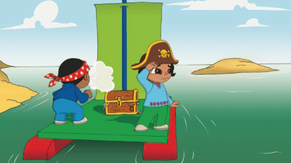
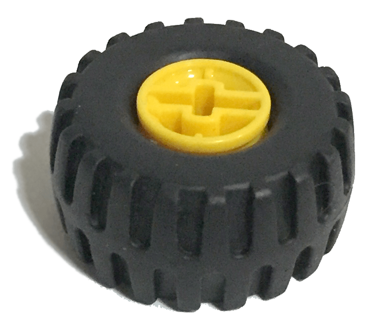
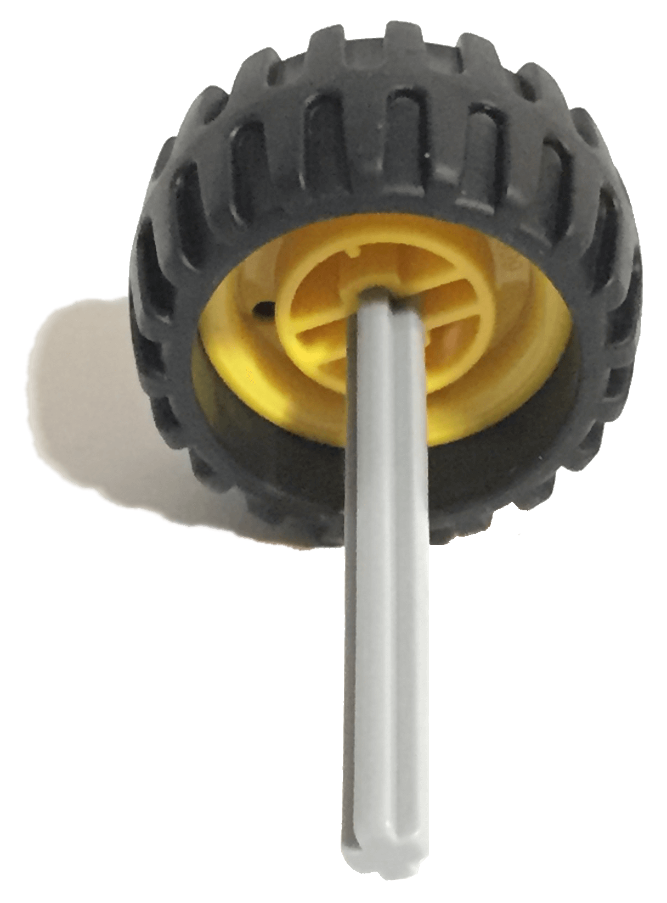

Los capitanes Sam y Sara son peligrosos piratas camino a la isla del tesoro.
Van a enterrar sus preciados tesoros de plata y oro.
Deben darse prisa para que nadie los vea, ya que no quieren que nadie les robe su botín.
Pero los capitanes Sam y Sara, y su infame balsa no van muy rápido. Sam sopla la vela para hacer que la balsa
navegue más rápido. Sara dice que necesitarán darse prisa para que nadie los vea.
¿Puedes ayudar a Sam y Sara a hacer que su balsa navegue más rápido? ¡Veamos cómo se hace!


• Llena la bañera
• La bañera debe tener un mínimo de 50 cm de largo
• El agua debe ser lo suficientemente profunda como para que flote la balsa. Entre 5 y 10 cm de profundidad
es lo ideal
• Coloca con cuidado la balsa en el agua
• La balsa debe tener espacio suficiente para flotar sin golpear el fondo y los lados de la bañera

Sopla o haz olas con la tapa de la caja, como un "fabricante de vientos". Averigua qué vela hace que tu balsa
navegue más rápido.
Predice primero cuál de las balsas navegará rápido y cuál navegará más rápido. Escribe tus predicciones
utilizando las palabras de la hoja de trabajo.
A continuación, prueba la balsa con la vela pequeña y después, con la vela grande. Escribe tus hallazgos
utilizando las palabras de la hoja de trabajo.
La vela grande tiene más superficie para capturar la fuerza del viento. El viento empuja la vela, haciendo
que la balsa se desplace hacia delante.

• ¿Que has predicho que ocurriría y por qué?
• Describe lo que ha ocurrido.
• ¿Cómo te aseguraste de que las pruebas fueran imparciales?
¿Has soplado o hecho olas a la misma velocidad? ¿Has soplado o hecho olas desde la misma posición?
• Describe cómo funciona el modelo.
• Si pudieras mejorar tres cosas en tu balsa, ¿cuáles serían y por qué?
Sugerencia:
Al hacer cambios en la balsa, es una buena idea secarla antes con una toalla. El agua acumulada en la balsa
puede afectar su flotabilidad.
¿Sabías que...?
El aire atrapado bajo los ladrillos LEGO® DUPLO® los hace flotar. Si el aire se escapa, la balsa se hunde.
Utiliza tu imaginación para diseñar tu propia vela para la balsa.
Diseña velas de diferentes formas y prueba cómo funcionan. Considera qué materiales serían los mejores. Crea
entonces unas velas bonitas y coloridas.
En la hoja de trabajo, dibuja tu mejor diseño de vela.


Puedes construir una balsa que transporte montones de plata y oro, ¿sin hundirse?